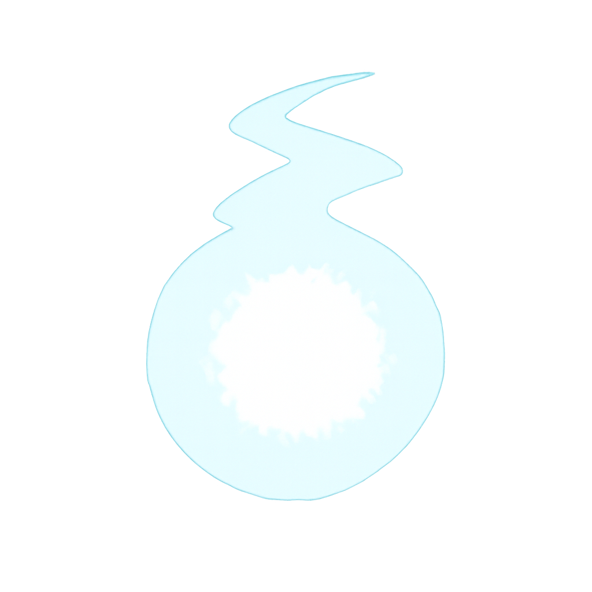
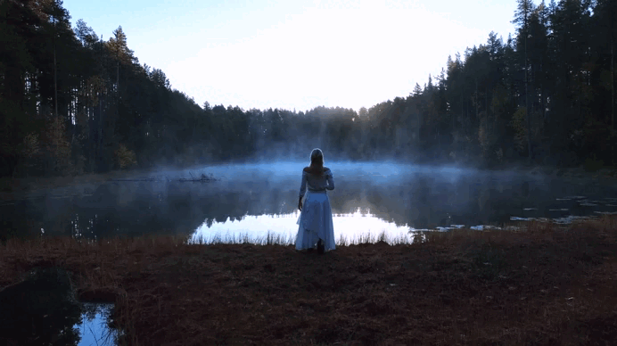

Bem vindo 🌿
A cultura celta nasce em meados de 1200 a.c., sendo predominante nas tribos nomades da região da Europa central, tendo como região principal a Austria, contudo foi se espalhando pela Europa, estabelecendo-se nas atuais Irlanda, Bretanha, Pais de Gales, Escocia, norte da Espanha e outros.
Por ser uma cultura, não havia um imperio dominante, apenas pessoas que cultuavam a natureza e suas maravilhas, agredecendo a terra e fazendo rituais para ela.
Druidas:
sacerdotes, sábios e guardiões da tradição oral.A vida era guiada pela honra, coragem e respeito à natureza. As mulheres tinham voz e poder, sendo líderes, guerreiras e curandeiras, um reflexo do equilíbrio entre forças masculinas e femininas.
Os rituais celtas eram celebrações do ciclo da natureza, da vida e do espírito. Para os celtas, tudo (a terra, os rios, o vento, os deuses, os mortos e os vivos) fazia parte de um mesmo fluxo sagrado. Seus ritos buscavam honrar essa conexão e manter o equilíbrio entre os mundos.
Ao invés de templos de pedra, os locais sagrados eram nemetons (florestas, rios, colinas e nascentes). Os rituais aconteciam ao ar livre, sob a lua ou o sol, em contato direto com os elementos. Os rituais eram momentos coletivos onde pessoas se reuniam para celebrar sua fé e conexão com o mundo espiritual, com a presença de um druida guiando a celebração.
A terra representa estabilidade, fertilidade e nutrição.
A água simboliza emoção, intuição e purificação.
O fogo representa paixão, energia e transformação.
E o ar simboliza intelecto, comunicação e liberdade.
clique no logo!!!